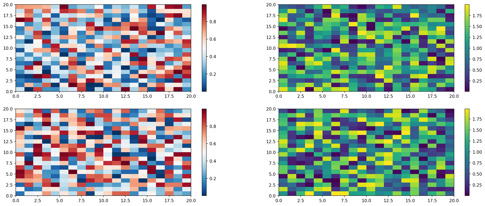

Code
import numpy as np
import matplotlib.pyplot as plt
r = np.arange(0, 2, 0.01)
theta = 2 * np.pi * r
fig, ax = plt.subplots(
subplot_kw = {'projection': 'polar'}
)
ax.plot(theta, r)
ax.set_rticks([0.5, 1, 1.5, 2])
ax.grid(True)
plt.show()
For a demonstration of a line plot on a polar axis, see Figure 1. and Section 2. and Equation 1.
import numpy as np
import matplotlib.pyplot as plt
r = np.arange(0, 2, 0.01)
theta = 2 * np.pi * r
fig, ax = plt.subplots(
subplot_kw = {'projection': 'polar'}
)
ax.plot(theta, r)
ax.set_rticks([0.5, 1, 1.5, 2])
ax.grid(True)
plt.show()
nothing
Einstein’s theory of special relatively that expresses the equivalence of mass and energy:
\[ E = mc^{2} \tag{1}\]
Note that there are five types of callouts, including: note, tip, warning, caution, and important.
Note that there are five types of callouts, including: note, tip, warning, caution, and important.
Note that there are five types of callouts, including: note, tip, warning, caution, and important.
Note that there are five types of callouts, including: note, tip, warning, caution, and important.
Note that there are five types of callouts, including: note, tip, warning, caution, and important.
Colorbars indicate the quantitative extent of image data. Placing in a figure is non-trivial because room needs to be made for them. The simplest case is just attaching a colorbar to each axes:1.
1 See the Matplotlib Gallery to explore colorbars further
Colorbars indicate the quantitative extent of image data. Placing in a figure is non-trivial because room needs to
import matplotlib.pyplot as plt
import numpy as np
fig, axs = plt.subplots(2, 2)
fig.set_size_inches(20, 8)
cmaps = ['RdBu_r', 'viridis']
for col in range(2):
for row in range(2):
ax = axs[row, col]
pcm = ax.pcolormesh(
np.random.random((20, 20)) * (col + 1),
cmap=cmaps[col]
)
fig.colorbar(pcm, ax=ax)
plt.show()